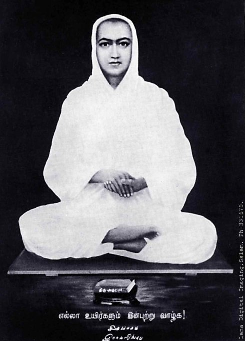

意识的七个层次----合一之路
合一大学的教导中，将人的意识状态分成七个不同的层次。
第一个层次是指沉溺型的人（indulging being ）。
处在这个意识状态的人，对自己的行为毫无控制力，对自己的言行采取完全放纵的方式。当他生气了时候，他就会大发脾气；他想要什么东西，他也不管不顾就一定要拿到手，他的关注点永远只在自己个人身上，完全不顾及他人及周围的环境，等等。处在这种意识状态的人对自己的思想行为没有一点自制力。
第二个层次是指控制型的人（controlling being ）。
处在这个意识状态的人，对自己的情绪或行为有所控制，但往往也表现为过度的压抑，或过度在乎别人对自己的看法。极度自律，控制自己的欲望。
第三个层次的人是有意识的人（consciousness being ）。
处在这个意识状态中的人，他们已经对自己的言行有意识，但是，他们还没有对自己的痛苦有觉知。很多的人都是处在这个意识状态中。尤其是有些人在参加了一些身心灵的成长课程或者学习了一些知识之后，都处在这个状态中。他们开始意识到自己的行为，但是，却往往对自己的行为会有一些批判或解释。比如，当他生气了，过后，他意识到自己生气，他要么就是落入到对自己的批判当中，觉得自己不应该生气，对自己的生气有一份生气，要么就是开始对自己的生气产生出很多合理化的解释。
以上三种意识状态，是大多数人的意识状态，也就是一种未觉醒的状态。
第四个层次的人是指有觉知的人（aware being）。
事实上，有觉知的人与有意识的人之间有着非常细微的差别，也正是这个差别，让很多人误以为有意识就是有了觉知。事实上，觉知（awareness）是指一种不带任何头脑的评判、指责、分析和比较等的纯粹的观看。当头脑不掺杂进来时，觉知才真正的发生了。用合一的教导来说，“在你的行动与你的意识之间没有间隙时，那就是觉知。”
举个简单的例子，你被一个朋友蒙上眼睛，带到一座美丽的大山前，在他拿下你的眼罩，你睁开眼睛看到大山的那一刻，你不由自主的“啊”了一声，那个看见，不带任何头脑的主观判断的看见，就是觉知；而当你一开始问：“这是什么山？叫什么名字？”的时候，你的头脑介入了，那就只是意识。
觉知就是纯粹的体验，觉知本身就是一个终结，它不是用于达到某个终点的方法。在觉知里，没有什么是需要被改变的，一切都只是经验，一切都是被接纳的，无论那个经验是仇恨、嫉妒还是悲伤、痛苦等等，在觉知里，就只是纯粹的经验。
觉知并不是可以被练习的，虽然它看起来好像是可以被练习似的。但是，真正的觉知是一个发生，它是一个礼物。在第四个层次的意识状态里，觉知来了又去，它不是24小时持续不断的。巴关说，当一个事情发生时，你能够在30分钟之内就对它产生觉知，那么，你就是一个觉醒的人。对于一个觉醒的人来说，这个觉醒的过程仍然是不断的加深的，慢慢的，你会从30分钟一直下降到15分钟、10分钟、5分钟，甚至到1分钟。但是，只要你的转化速度不是发生在瞬间，你内在还有哪怕10秒钟的痛苦发生，你都还不能算是一个完全觉醒的人（fully
awakened being）。
第五个层次是指完全觉醒的人（fully awakened being）。
一个完全觉醒的人，他的痛苦是零，而痛苦从1分钟减低为零的过程也是最最艰难的过程。觉醒是一个过程。说它是一个过程，是因为外在的事情依然在不断的发生，而对于一个觉醒的人来说，在他的内在会不断的经验那个由外而内的转化，并以越来越快的速度去转化的过程。对于一个觉醒的人来说，这个过程是一个一直持续不断的过程，永不停歇。由此，我们也可以说，意识的提升是永无止境的。
只有到达了完全觉醒的状态的人，他的觉醒才是永不退转的。比如说当年的佛陀，他就是到达了完全的觉醒状态。
第六个层次是指与神合一（神的实现，God Realized being）的人。
有的人完全觉醒了，但他们没有意识到神的存在，或者他们认不出无处不在的神的手，那他们就不是与神合一的人。在印度，还有像西藏等地方，有很多与神合一的人。他们通过奉爱（Bhakti）的道路，达到完全的与神合一。印度这样高度的与神合一的人有很多，其中我印象最深的一位是拉玛林伽（Ramalinga），这位生活在19世纪的印度的大师就是一位高度的与神合一的存在。他从小就能够完全的与神联结，以至于他的整个存在都充满了光明，没有人能够为他拍下来一张照片，因为他的全身都是光，现存的所有形象全部都来自于画相。而在他离开这个世界的时候，他是带着他的肉身一起升天并消失得无影无踪的。

而到达这个层次的人，他如果要再来人世间转世的话，他就是阿凡达（avatar）――带着神圣的使命来到人间的人，神的化身。
而合一深化课程的目标就是要让参与者达到完全觉醒、与神合一，或是两者皆是的境界。